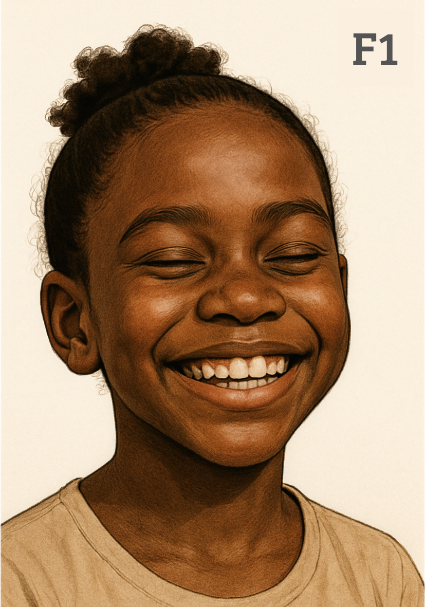

Prueba de Reconocimiento de Emociones Facial
Evaluación de Inteligencia Emocional
Instrucciones de Evaluación
Se presentará una secuencia de imágenes faciales.
El objetivo es identificar la emoción principal que expresa el sujeto en fotografía.
Las imágenes de control (reversos de las cartas) sirven de pausa visual entre estímulos; no requieren valoración.
Por favor, responda con la mayor precisión posible. No hay límite de tiempo estricto.
Identificador del Paciente:
Comenzar Evaluación
Paciente:
---
Imagen:
1
/ 72 (Rostro:
1
/36)

Alegría
Tristeza
Enfado
Miedo / Sorpresa
Asco
Inexpresividad
Continuar Siguiente Estímulo
Resultados de la Evaluación
Paciente:
---
Rostros Evaluados:
36
0%
Precisión Global
0
Aciertos
0
Desaciertos
0
Omisiones
Nueva Evaluación
Descargar Reporte (.ods)